Комплексное корпоративное пространство для организации и проведения видеовстреч и вебинаров, календарного планирования и управления командой.
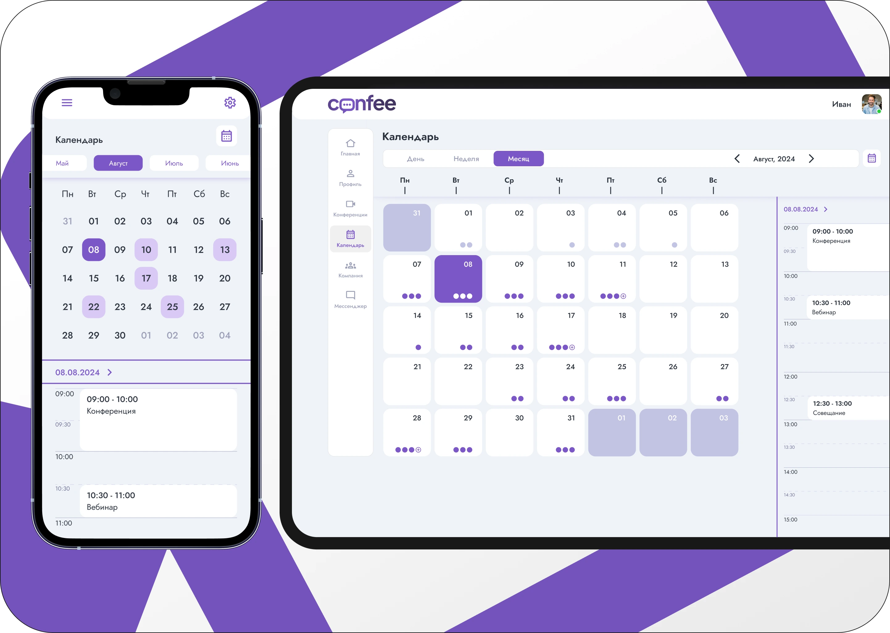
Задачи и цели
- Разработка пользовательских интерфейсов
- Обеспечение адаптивности сайта под различные устройства
- Создание UI-kit для повышения консистентности
- Упрощение работы с интерфейсом
- Удержание пользователя на платформе
Что было сделано
- Построила USM.
- Сделала UI-кит и создала дизайн web-интерфейсов.
- Провела глубинные интервью и юзабилити тесты.
- На их основании построила CJM и выявила места для улучшения CX.
- Предложила идеи по оптимизации сквозных сценариев в этом сервисе.
Результат
⭐ Новые интерфейсы создания конференций уменьшили отказ пользователей на 15% за счет добавлении новой функции - возможность создания мгновенной конференции без дополнительных настроек.
⭐ Ретеншн, посетивших одну или более конференций в течение месяца, увеличился на 43% благодаря оптимизации календаря.
User Story Mapping
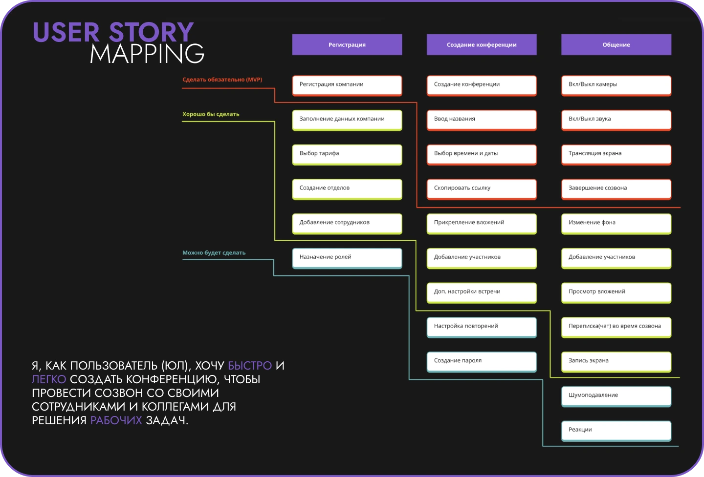
Customer Journey Map
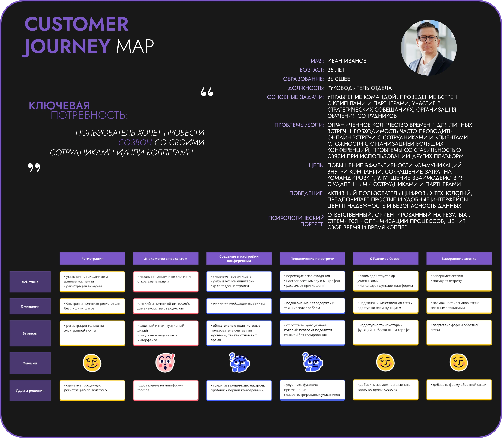
Планировщик и календарь
Инструмент для управления временем и задачами, разработанный с целью оптимизации рабочего процесса и повышения уровня организации.
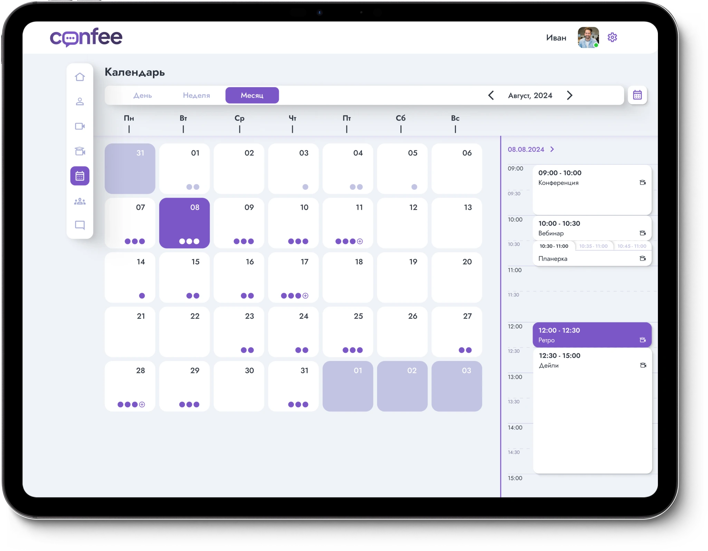
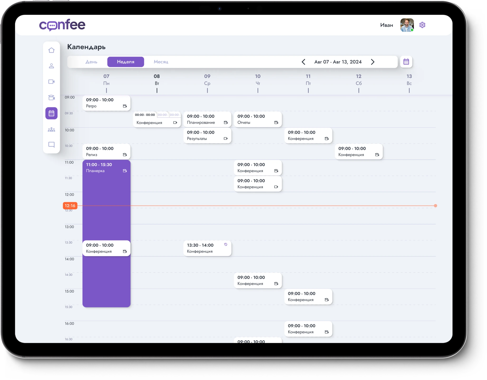
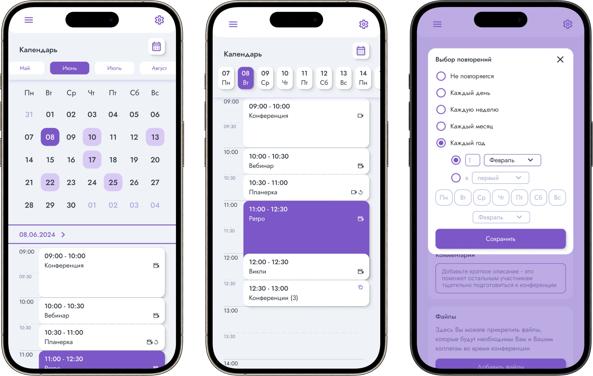
Рабочее пространство
Инструмент для оптимизации управления сотрудниками, отделами и всей организацией, разработанное с целью эффективного руководства всеми аспектами корпоративной деятельности.
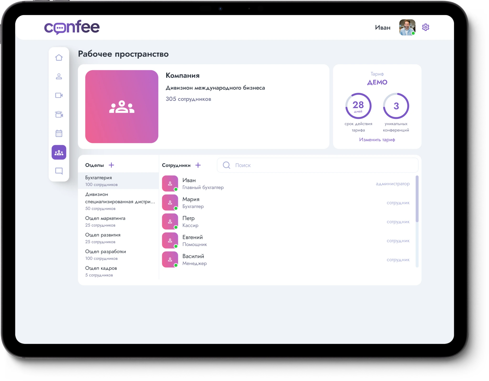
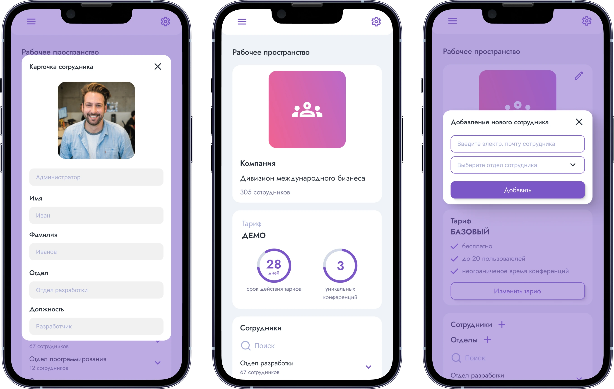
Видеоконференции
Полноценное рабочее пространство для организации и проведения видеовстреч, вебинаров, трансляций.
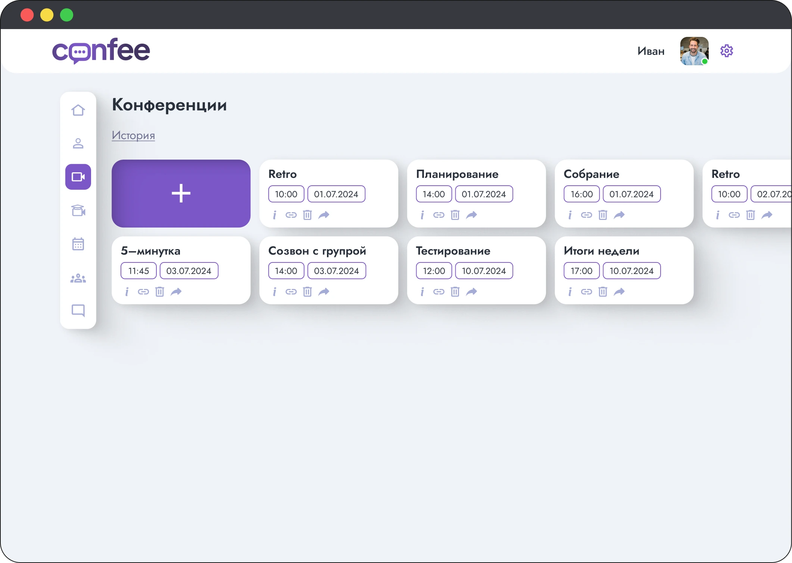
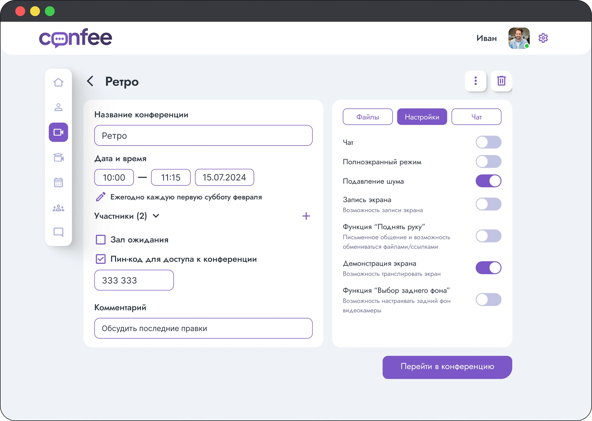
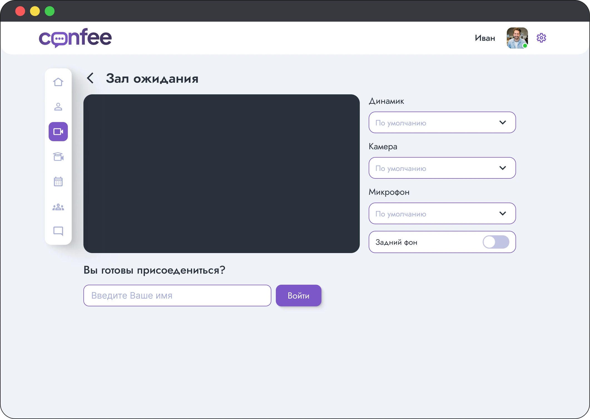
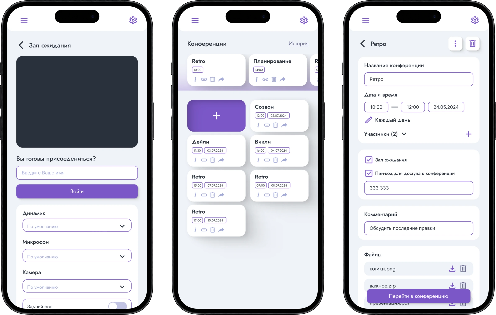